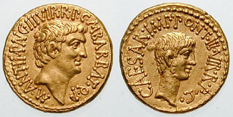
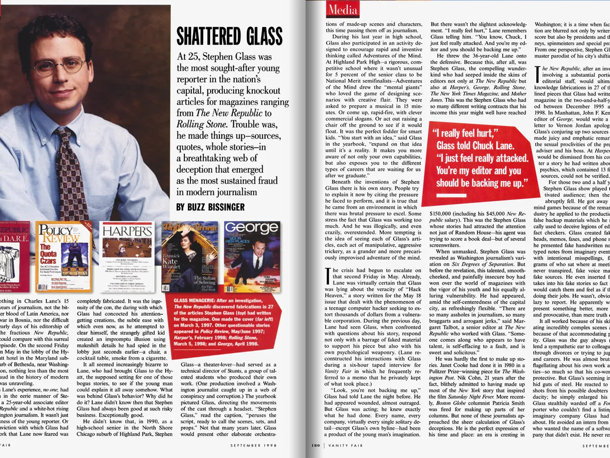
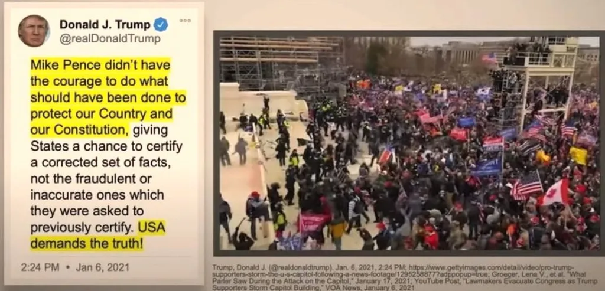
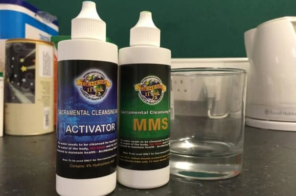

Today, misinformation is considered by the World Economic Forum (WEF) as one of the main threats to our society. However, misinformation is not just a recent threat. In fact, it has been a part of many major events through the ages!
Through the Centuries
Let's take a look at the impact of misinformation through time!
Augustus Octavian (32 B.C.)
Examples of coins used by Octavian and Marc Anthony
Octavian was at war with Marc Anthony about who would claim the position of Rome's ruler. As the Roman public did not wish to support a civil war, both sides used a variety of misinformation tactics to rally their troops. This included:
- Claims that Cleopatra was a foreign sorceress who seduced Marc Anthony
- Anthony and Cleopatra claimed that Octavian was of low birth, while Anthony was from Roman nobility
- This convinced 1/3 of the Roman Senate to defect to Anthony!
- Both sides used their own coins that depicted their close relationship to Julius Caesar
In the end, Octavian won the war. But this presents proof of the impact of information on people's beliefs.
Great Moon Hoax (1835)

Illustration of life on the moon depicted in the articles
This hoax was created by Richard Adams Locke, where he claimed that astronomer Sir John Herschel had made several new discoveries of life on the Moon. In the series of the Sun newspaper articles, Locke described:
- Men with bat wings
- Unicorns and moon-bisons
- Strange "slender pyramids" in irregular groups
The catch? The articles were meant to be satirical, parodying reports that by other astronomers about the potential of life on the Moon. But the public believed it, and many religious groups even started making plans for missionary work on the Moon!
Stephen Glass Case (1972)
Image of article written by Stephen Glass
Stephen Glass was an up and coming reporter, writing articles for the largest magazines at the time, like New Republic, Rolling Stone and Harper's Magazine. These sensational stories took the world by storm, but the issue? They were all fake! Here are some of the extensive work Glass did to cover up his false stories:
- Filled notebooks with fake interview notes
- Created fake business cards, phone lines and fake voicemails
- Created fake websites and newsletters
Glass was eventually caught when his article "Hack Heaven" was revealed to refer to companies that never existed. But for two and a half years, Glass published hundreds of articles that captured the world, despite facing many defamation lawsuits from companies he had lied about.
Dangerous Consequences
Misinformation has lead to many dangerous ramifications. Here are some main topics and associated real world consequences.
- Cause public confusion about important global and political issues
Example:
Event:
On January 6th 2021, Trump tweeted about allegations of vote fraud and gave a speech in Washington where he claim that his supporters conduct a peaceful march to the Capitol. However, soon after a riot begun at the Capitol. 
Screenshot of a Donald Trump tweet and a picture of rioters outside the CapitolMisinformation:
The 2020 US election was rigged (Biden was proven to have won fairly)Consequences:
- Donald Trump was charged for incitement of insurrection
- A large-scale criminal investigation on the riot began
- 5 people lost their lives and many more injured, law enforcement officers recorded with severe injuries
- Have a deadly effect on people’s health
Example:
Event:
During the COVID-19 pandemic, it was spread online that consuming chlorine dioxide could help prevent and treat the disease. Many websites begun to sell sodium chlorite in distilled water that buyers could mix with citric acid to drink.

Image of Miracle Mineral Supplement, one of the most common chlorine dioxide productsMisinformation:
Drinking chlorine dioxide could treat COVID-19Consequences:
- FDA and FTC released a joint letter warning sellers of the products
- People have experienced serious health issues (respiratory failure, abnormal heart rhythms, life-threatening low blood pressure and liver failure)
- A COVID-19 patient died when a Argentinian judged forced a private clinic to use chlorine dioxide to treat them
- Scammed customers out of money
Example:
Event:
Dating scams are one of the most lucrative type of scams. A woman named Ellen experienced this firsthand when she met a man online called Dave Field. In the following months, Dave tricked Ellen into helping him "clear his debts" so he could claim his father's estate.

Infographic of how romance scams workMisinformation:
Dave Field was not real person at all, and neither was were the debts that he needed help paying off.Consequences:
- Ellen lost over $1.3M, all of her life savings and more
- Canadians are reported to lose of $50M to dating scams
- Emotional damage to victims, who have been betrayed by someone they thought they had a deep connection with